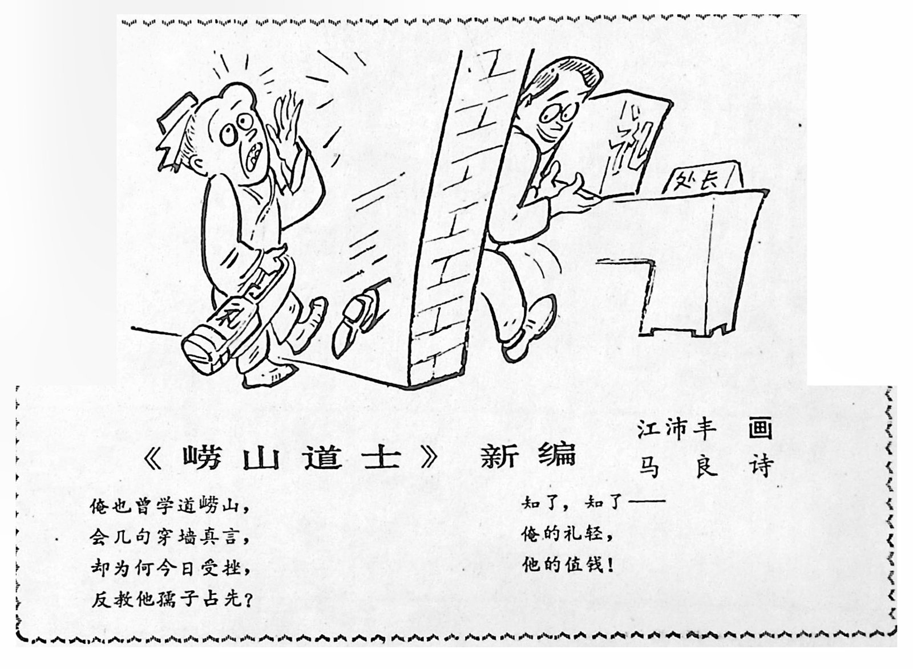

江沛丰画；马良诗 《人事》1988年第12期（总第39期），封三
《崂山道士》新编
“The Taoist of Laoshan,” a New Version
- Caption
- 俺也曾学道崂山，会几句穿墙真言，却为何今日受挫，反教他孺子占先？ / 知了，知了——俺的礼轻，他的值钱！
I too studied the Way on Mount Lao and know a few true spells for walking through walls — so why am I blocked today, while this youngster gets ahead of me? / I see, I see — my gift was light, his was worth something! - Text in the drawing
- 礼 / 处长
Gift / Division chief - Description
- A Taoist reels back from a wall he cannot pass through, while a man in a suit walks straight through it carrying a gift box toward a division chief's desk.
- Note
- In Pu Songling's tale “The Taoist of Laoshan,” a man learns a spell for walking through walls but loses the power as soon as he tries to show off. 知了, “I understand,” puns on the cicada (知了).
- Artists
- Jiang Peifeng 江沛丰 (drawn); Ma Liang 马良 (poem)
- Published in
- 《人事》1988年第12期（总第39期）, inside back cover
- Themes
- Gifts and banquets · Connections (guanxi) · Fable, legend and history

Cite
Jiang Peifeng and Ma Liang, “《崂山道士》新编” [“The Taoist of Laoshan,” a New Version], Renshi (Personnel) 《人事》, 1988, no. 12, inside back cover.